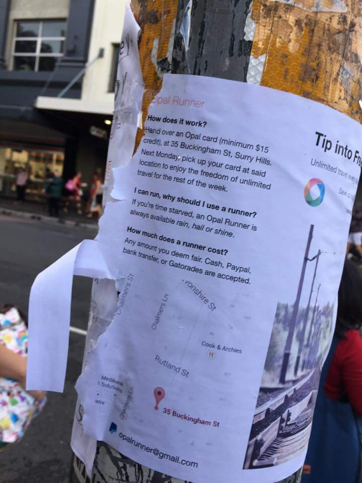

Opal Hack why-o-why?
cdmarto posted Opal Runner flyer photo at …opal runner service… - reddit

Public's opinion is mixed. Some are neutral, some for, while others are against.
Neutral: I met someone the other night who works for the Opal call centre and asked her if there are plans to close the loophole. She told me that they legitimately don't care… - arthurseidler
For: Opal Runner, hes the hero Sydney deserves but not the one it needs right now. So we'll hunt him. Because he can take it. Because he's not our hero. He's a silent guardian, a watchful protector of the everyday commuter. - OG-NightRider
Against: …I'm saying that the "Opal runner" is ruining Opal's benefit system for all of us. -> People take advantage of/exploit something, which ruins it for all of us. - Udunno13
In the grand scheme of things, Opal Runner is moot. But why start Opal Runner, here's my take on it:
There's a subculture of people extracting value out of frequent flyer point system: justanotherpointstraveler This sort of activity is prevalent in Mother Nature as well.
We are creative creatures, that is we can make what was not in existence before our making. And that which we make fundamentally increases our command over our inherited environment, and upgrades said environment to make our existence more secure and joyful. But what is truly unique about our species is that we are able to make that which aids/amplifies our ability to make. That is our key to survival as a species. One that will outlive the existence of our current Solar System though we, the people of 2015, will not live physically to experience but nonetheless preparation must be taken now for our distant posterity to have a good crack at survival.
But I must comment that opalrunner does not contribute, in any meaningful way, other than to reaffirm that creative ability inherent in everyone of us, to lifting mankind productivity level per capita per squared kilometer in similar quality as a national space program, or large scale infrastructure upgrade, or fundamental scientific/musical/artful break through would.
It is my belief that public transport should be efficient and safe in getting people, and goods & services from A to B; thus contributes to lifting man's power of labor. To that end the whole administrative, enforcement, training, and maintenance of the current transport ticketing system should be scrapped. It's a woefully wasteful use of man's labor. All those freed up personnels would be much more productive in various endeavors of the engineering, science, art, music, healthcare, and education. We have a taxation system in place. Let's put it to good use.
So to those with neutral opinion, you either are already preoccupied with more important matter, or simply don't care. To those that simply don't care: "I submit to you that if a man has not discovered something that he will die for, he isn't fit to live" - Martin Luther King, Jr., speech during the Great March on Detroit, 23 June 1963. To those who oppose, lobby your relevant newly elected public servant hard to close the loophole. To those who are supportive, hand over your cards to a runner.